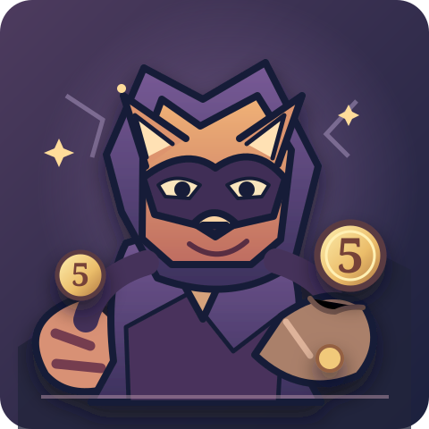

Index Merchant
A warm, friendly character with a curious collection of mathematical treasures.
Original artwork · Prototype gallery · Pass 1
A visual identity for Index Shuffle: mathematical curios, warm merchants and memorable opponents. These are the first three original SVG concepts. The mathematical board, clear rules and readable counters remain the priority.
Explore 31 illustrated shop relics, defences and tools →
Explore all seven boss portraits and preview the encounter introduction →
A warm, friendly character with a curious collection of mathematical treasures.

Heavy geometric armour communicates the extra obstacle it brings to the board.

A playful antagonist whose stolen fives hint at the base-5 score penalty.
The five other existing bosses deliberately retain their normal text-only treatment in this prototype. Later passes can expand the portrait library without altering boss rules, item mechanics or saves.